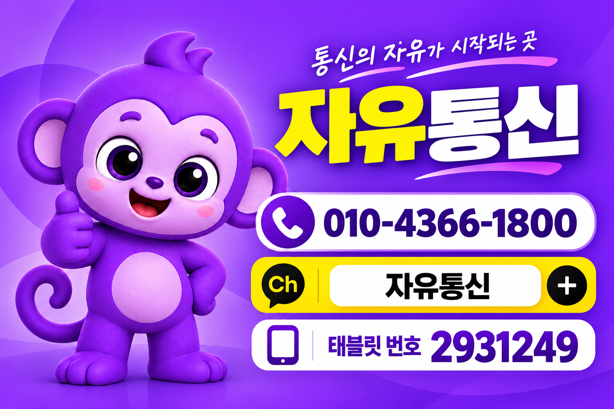

네이버페이
월 5,000원 적립 표기
ZAYUMOBILE · 후불요금제 전문
KT·LG망 요금제 비교부터
온라인 셀프개통과 상담 개통까지.
자유모바일과 함께 선택하세요.

01 / FIND YOUR PLAN
제공 이미지의 금액을 대조한 안내입니다.
표시 월요금은 부가세 포함입니다. 판매 기간은 가입 전 확인하세요.
최대 3개를 선택해 망별로 나란히 비교할 수 있습니다. ‘기본제공’의 범위와 초과요율은 가입 전 확인하세요.
02 / LIFE BENEFITS
아래는 제공된 KT 제휴 안내 이미지의 표기 내용입니다.
현재 제공 여부와 선택 방식은 확인 중이며, 전체 혜택의 동시 제공을 의미하지 않습니다.
월 5,000원 적립 표기
월 11,900원 구독권 무료 표기
각 월 5,000원 상품권 표기
월 쿠팡캐시 5,000원 표기
결제 20% 할인 · 월 5,000원 한도 표기
대상 요금제 / 지급·등록 방법 / 유지 조건 / 중복 적용 / 종료일
03 / GET STARTED
요금제 목록에서 ‘이 요금제로 가입 안내’를 누르면 선택 정보가 여기에 표시됩니다.
선택 정보는 외부 신청 페이지나 카카오 채팅에 자동 전송되지 않습니다. 복사한 내용을 상담창에 붙여넣어 주세요.
원하는 요금제를 고른 뒤 공식 가입 페이지에서 신청하는 방식입니다. 지원되는 가입 유형과 인증 조건을 먼저 확인하세요.
온라인 셀프개통 ↗사용자가 지정한 신청 안내 페이지로 연결됩니다. 후불 상품 및 자유모바일 귀속을 신청 화면에서 확인하세요.사용량, 신규·번호이동 여부와 희망 요금제를 알려주세요. 본인확인과 가입 가능 조건을 확인한 뒤 신청합니다.
010-4366-1800 전화 상담자유모바일 카카오 상담 ↗본 페이지에서는 신분증·주민등록번호·계좌정보를 수집하지 않습니다. 개통 시간, 유심·eSIM 지원, 미성년자·외국인 가입 조건은 확인이 필요합니다.
BEFORE YOU JOIN
표시 월요금은 부가세 포함입니다. 할인 적용 기간·종료 후 요금, 유심비와 초과 사용 요금을 확인하세요.
기본 데이터 소진 후 속도·차단 여부, 영상·부가통화 한도와 초과요율을 확인하세요.
대상 요금제, 혜택 선택 방식, 등록·지급 시점과 유지 조건·종료일을 확인하세요.
가입 유형, 본인확인 방법, 단말·유심 지원 여부와 실제 개통 가능 시간을 확인하세요.
일부 항목은 제공 자료만으로 확정할 수 없어 확인 중입니다. 신청 화면의 최신 조건과 상담 내용을 확인한 뒤 진행하세요.
04 / QUESTIONS
번호이동을 검토할 수 있습니다. 해당 상품의 번호이동 지원 여부, 기존 회선 상태와 신청 조건을 확인해야 합니다.
표시 월요금은 부가세 포함입니다. 할인 기간과 종료 후 요금, 부가서비스·초과 사용 요금은 가입 전 확인하세요.
LG망은 자료에 표기된 소진 후 최대 속도 또는 차단 여부를 표시했습니다. KT 7GB+ 밀리의서재 월 19,500원 상품은 소진 후 최대 1Mbps로 확인했습니다. 다른 KT 상품의 소진 후 속도는 확인 중입니다.
동시 제공으로 확정할 수 없습니다. 선택 가능한 혜택, 지급 대상·방법·기간과 요금제별 적용 조건을 확인해야 합니다.
가입 방식으로 셀프개통을 지원할 예정입니다. 연결된 신청 안내 페이지에서 후불 상품 지원 여부와 본인확인·가입 조건을 확인한 뒤 진행하세요.
기본제공과 영상·부가통화 한도는 구분해야 합니다. 자료에서 확인한 별도 제공량은 요금제 상세에 표시하며, 대상 번호와 초과요율은 가입 전 확인하세요.